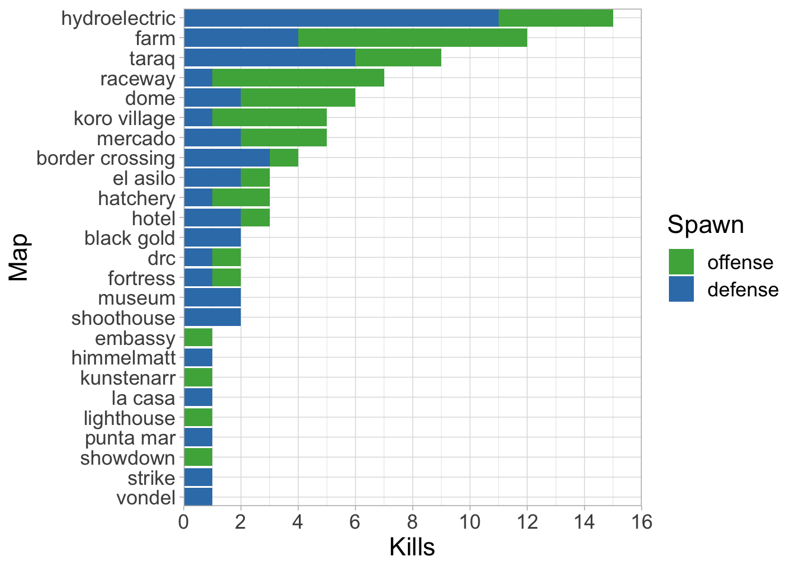

Modern Warfare II: throwing knife analysis
Background
During Modern Warfare II, I spent the majority of my time in Search and Destroy attempting to hit cross-map throwing knives. After I hit Embassy, the last 6v6 map I needed, I moved to Modern Warfare III and finished with a total of 91 cross-maps after omitting Shipment. Here is the data and some intriguing analysis for those of you who are interested. I’ve also made a public github repository for this dataset if anyone wants to use it in the future.
Analysis
I had a general sense of which maps I hit the most and which ones proved difficult as I progressed, but getting a bird’s eye view of the data illuminates several interesting details (Figure 1). For instance, more than half the maps (n = 14) were only hit once or twice. I’ve attributed this to several factors:
map difficulty — both spawns on several maps (e.g., Strike, Museum) are incredibly challenging and require creativity and lots of luck.
completionist — after going dry for many months on some of these maps, I just took a single kill and moved on.
seasonal releases — some maps (e.g., La Casa) are released much later and naturally get less reps than the base maps. This can also synergise with #1, #2, or both (e.g., Himmelmatt).

Another interesting observation was that 54% of the kills (i.e., 49/91) came from the top five maps - Hydroelectric, Farm, Taraq, Raceway, and Dome. Thinking back to the aforementioned factors, it is clear that Farm and Dome are relatively low difficulty maps, since throwing knives are viable from both spawns, distances are small, and strong arm can be used to shoot gaps at low angles giving enemies less time to react. The other three maps are more intriguing, largely because there may be a tendency to favour one spawn over the other (Figure 1). Let’s begin examining why it might be easier to hit cross-maps from the defensive side of Taraq and Hydroelectric, and the offensive side of Raceway.
Case studies
1. Crown Raceway — the most obvious example
Crown Raceway has a relatively large discrepancy in spawn safety, with offense holding the distinct advantage. The tall, central building naturally protects players until they want to run up the stairs to mid-street — the most logical area for defensive spawn cross-maps (Figure X). I only hit one here, which I’d consider unlucky since it’s a relatively high traffic area; however, the small kill zone, having to clear the concrete vegetation barrier, and underutilisation of the upper platform (which knives tend to bounce up on) by players still make this challenging. Note that hitting AFK players directly at spawn is also possible, but I’d argue it requires more luck.
On first glance, the offensive spawn looks quite safe; however, upon further inspection, I believe it is actually one of the more dangerous spawns in the game. The bomb entices players to run middle, which has a long runway and no barriers. This combined with a relatively consistent sprint-throw — that almost always clears the back end of the building — is a recipe for disaster. A wide kill zone, which reduces the need for precision and timing, bounce opportunities going through spawn, and players cross-cutting the knife path leaves everyone exposed, even those who are AFK.
Winner: Offense.
2. Taraq — an interesting case of design
Taraq being in my top five maps was somewhat surprising to me given it’s large size and asymmetric layout. Let’s start with the offensive throws because Infinity Ward does us no favours here. The large blue building in front of the defensive spawn forces players left towards B, which is more open, or right through a small corridor towards A. Unfortunately, the strategic position of the large central tower makes hitting the B route a near-impossible task. That leaves us with trying to perfect the A throw — a sprint-jump toss that has to a) get over the balcony; and b) miss the pillar on a near-perpendicular angle to the enemy which makes the timing simply exquisite. Given these factors, I’d chalk the three I hit from this spawn mostly up to luck and are easily some of my most satisfying kills.
Although the defensive throw is pretty blind (due to big blue), the offensive spawn is more forgiving and does us a subtle, but key favour. The characters tend to spawn in looking more left (towards A), which perhaps leads to more A rushes (it may also have no effect). Regardless, the offensive path to A is really the only viable option — lucky us. It is pretty open and the perpendicular runway offers lots of lead time if you can avoid the retaining wall and the corner building on the right. AFK players are also in play and a consistent point and release throw with ordnance gloves makes this easier than expected.
Winner: Defense.
3. Zarqwa Hydroelectric — the most dangerous spawn in the game?
Zarqwa Hydroelectric is simply a cross-mapping paradise; however, there are some key factors as to why kills on offense (n = 4) seem to be harder to come by than its counterpart (n = 11). Looking at the offensive knife kill zone, the long runway to mid is relatively good from a cross-map perspective, but the players are protected by the generator building and actually sit at a slightly lower elevation due to the carved out path on the right. Knives have to cross the map, clear the building, and get down fast, thus it’s likely that many players are safe by that time (if they tac-sprint at the start of the round). Furthermore, the electric power poles situated on the left side of generator roof and the rock and single power pole in the middle of the lane act as natural barriers which likely saved many lives over time!
Conversely, tossing knives from the defense spawn is the best kind of dream. Point and release ordnance gloves throw, check. Long, straight runway with no barriers and bounce opportunities, check. Perfect bomb placement that entices players to funnel down the middle lane, check. Nothing more really needs to be said as I started to expect to hit one from this side every game. It is the poster child of what to look for when cross-mapping and, although this is a small sample size, it might be the most dangerous Search and Destroy spawn in the game.
Winner: Defense.
Annual data
Lastly, I thought it was interesting to look at the temporal aspect of the data (i.e., when did these kills happen over the course of the year?). Looking at Figure X, it’s pretty evident that these occurred in three distinct time frames:
Release — excited to play the new game and learn new maps, etc.
March to April 2023 — likely returned to check out the new season and was clearly consumed with knocking out cross-maps.
Around the release of the next Call of Duty — had to grind out the remaining maps before I moved on to the next game.

Interestingly, my data follows the ‘typical’ Call of Duty player cycle pretty well, which makes me laugh — I guess it is a thing after all.
Until next time,
MGW